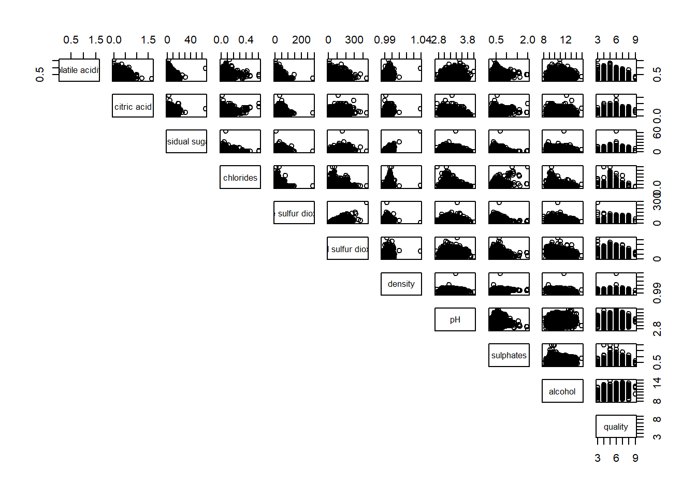
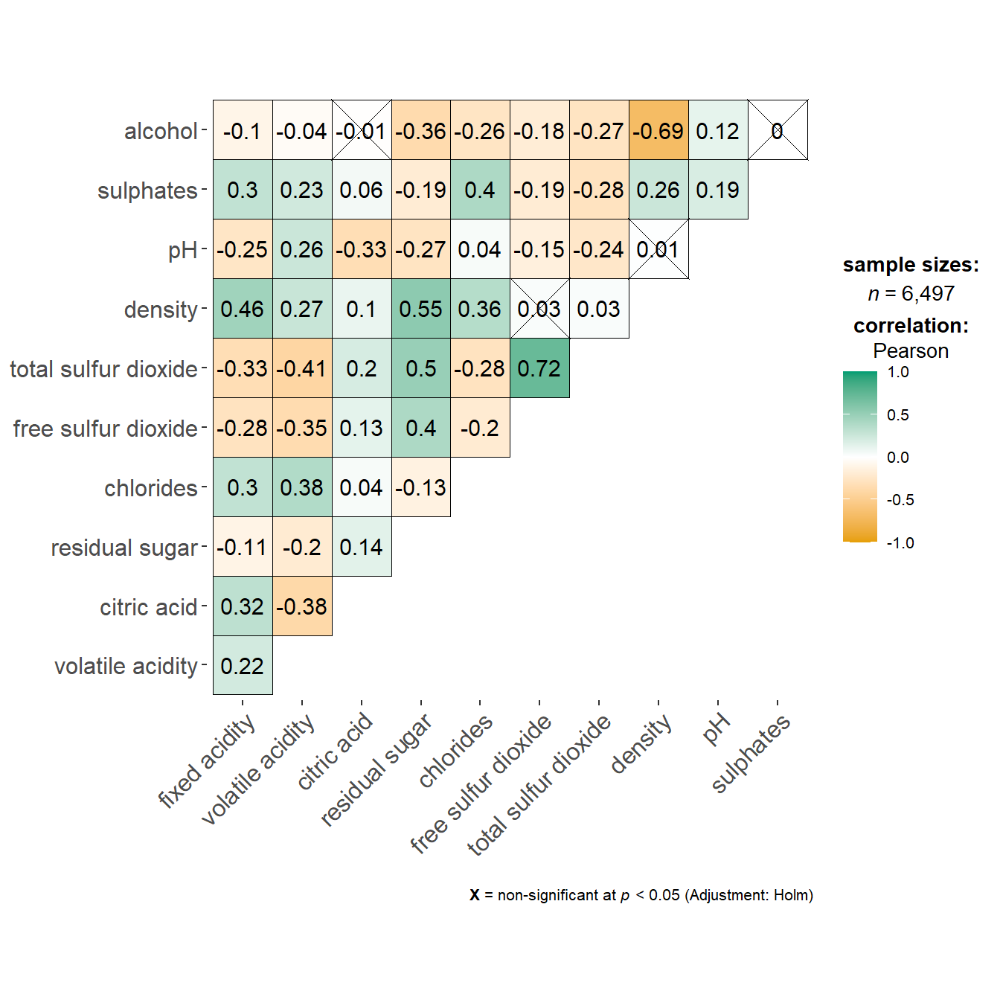
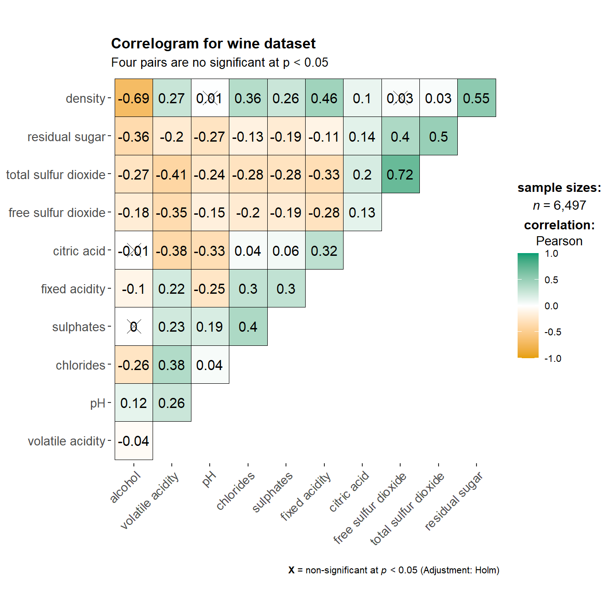
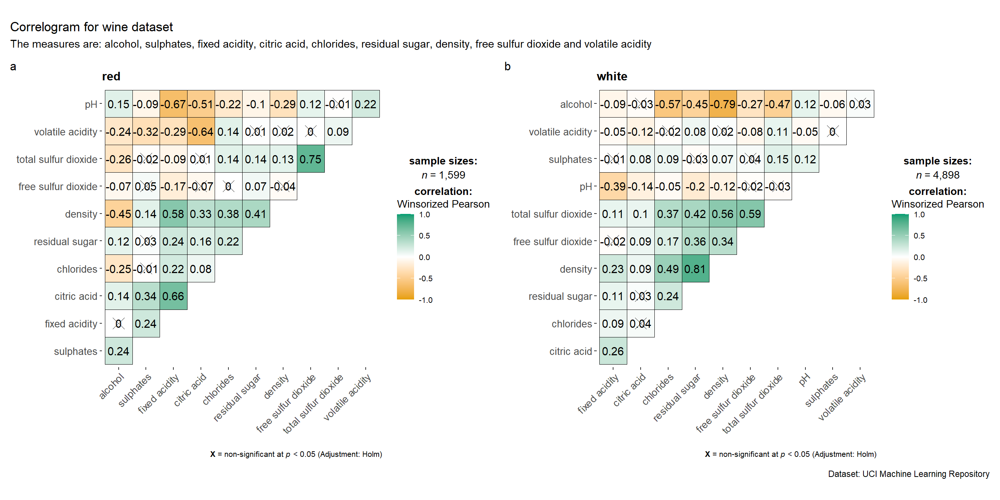
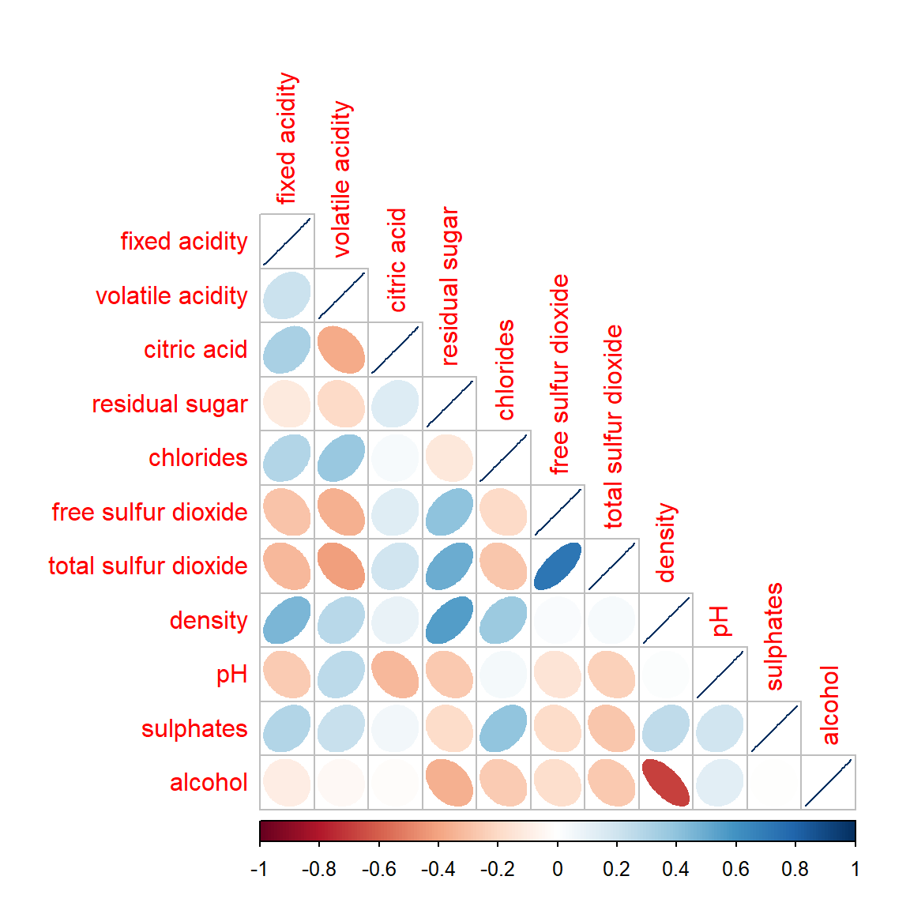
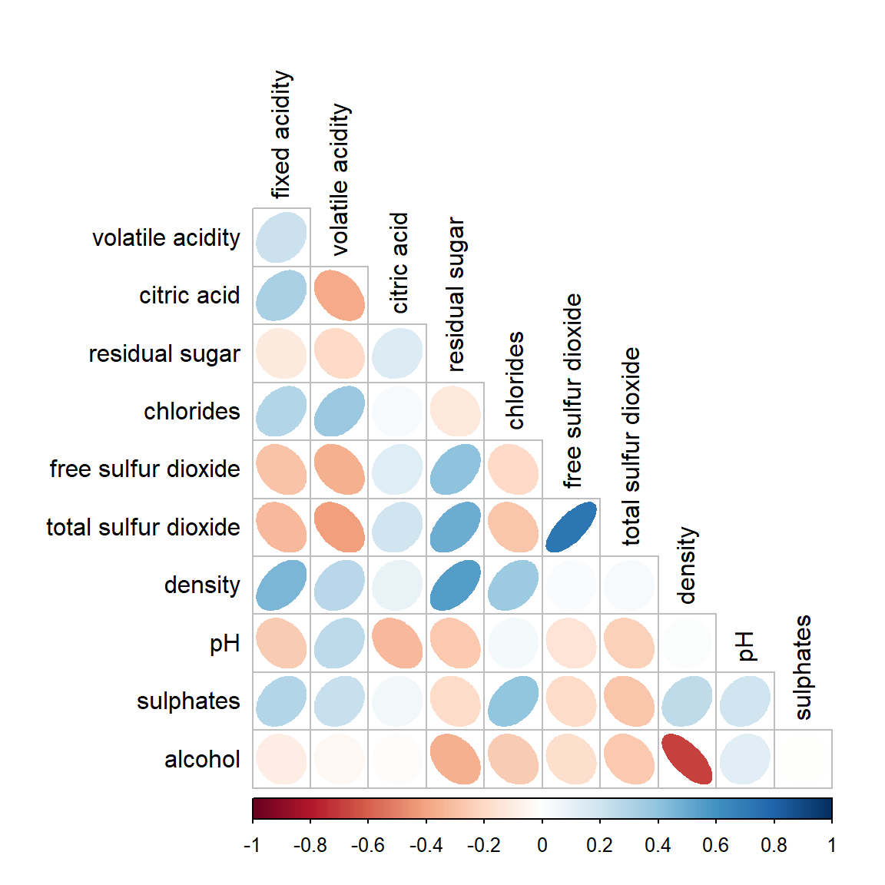
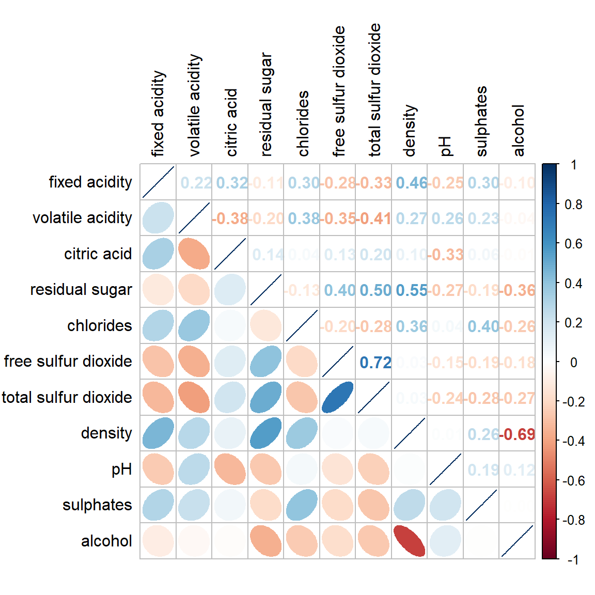
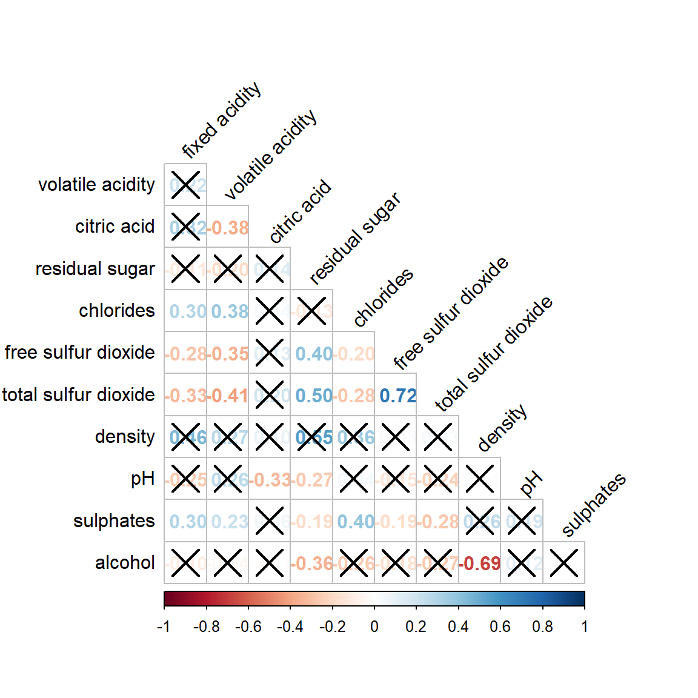
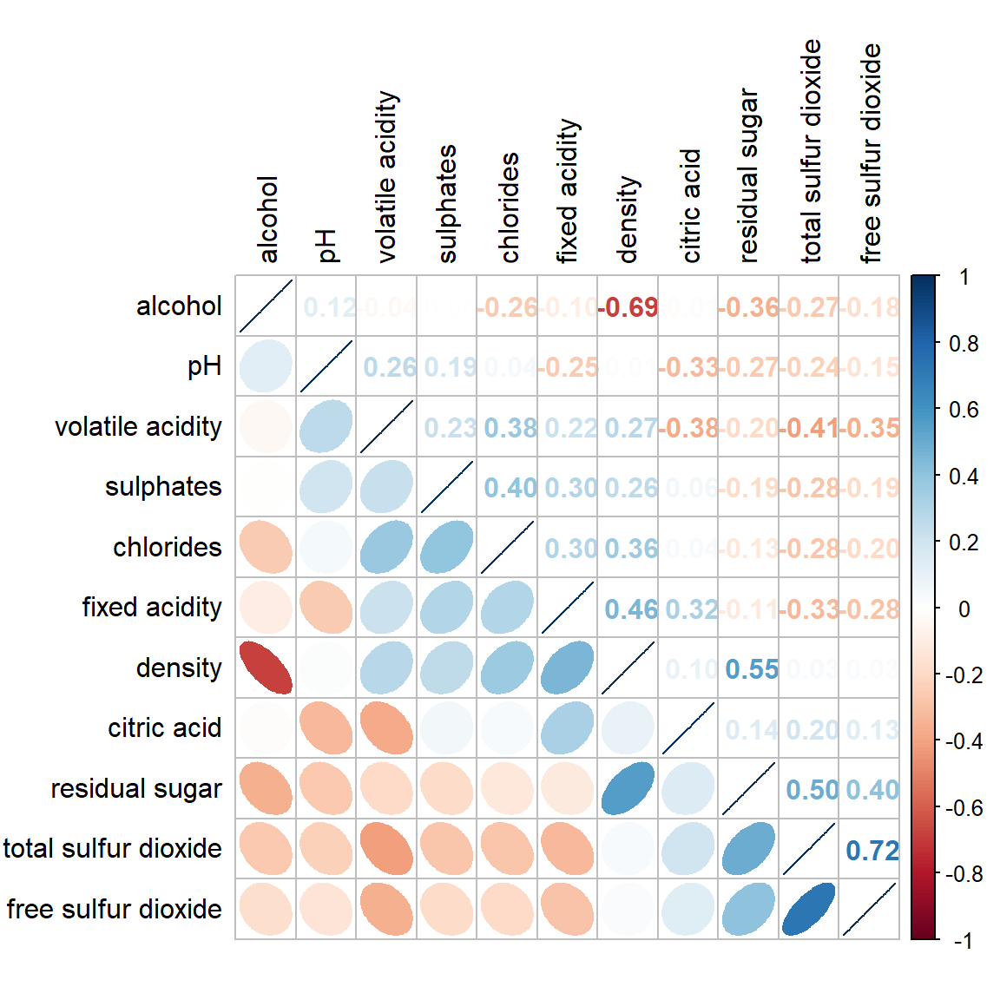

pacman::p_load(corrplot, ggstatsplot, tidyverse)6 Visual Correlation Analysis
6.1 Overview
Correlation coefficient is a popular statistic that use to measure the type and strength of the relationship between two variables. The values of a correlation coefficient ranges between -1.0 and 1.0. A correlation coefficient of 1 shows a perfect linear relationship between the two variables, while a -1.0 shows a perfect inverse relationship between the two variables. A correlation coefficient of 0.0 shows no linear relationship between the two variables.
When multivariate data are used, the correlation coefficeints of the pair comparisons are displayed in a table form known as correlation matrix or scatterplot matrix.
There are three broad reasons for computing a correlation matrix.
- To reveal the relationship between high-dimensional variables pair-wisely.
- To input into other analyses. For example, people commonly use correlation matrices as inputs for exploratory factor analysis, confirmatory factor analysis, structural equation models, and linear regression when excluding missing values pairwise.
- As a diagnostic when checking other analyses. For example, with linear regression a high amount of correlations suggests that the linear regression’s estimates will be unreliable.
When the data is large, both in terms of the number of observations and the number of variables, Corrgram tend to be used to visually explore and analyse the structure and the patterns of relations among variables. It is designed based on two main schemes:
- Rendering the value of a correlation to depict its sign and magnitude, and
- Reordering the variables in a correlation matrix so that “similar” variables are positioned adjacently, facilitating perception.
In this hands-on exercise, you will learn how to plot data visualisation for visualising correlation matrix with R. It consists of three main sections. First, you will learn how to create correlation matrix using pairs() of R Graphics. Next, you will learn how to plot corrgram using corrplot package of R. Lastly, you will learn how to create an interactive correlation matrix using plotly R.
6.2 Installing and Launching R Packages
Before you get started, you are required to open a new Quarto document. Keep the default html authoring format.
Next, you will use the code chunk below to install and launch corrplot, ggpubr, plotly and tidyverse in RStudio.
6.3 Importing and Preparing The Data Set
In this hands-on exercise, the Wine Quality Data Set of UCI Machine Learning Repository will be used. The data set consists of 13 variables and 6497 observations. For the purpose of this exercise, we have combined the red wine and white wine data into one data file. It is called wine_quality and is in csv file format.
6.3.1 Importing Data
First, let us import the data into R by using read_csv() of readr package.
wine <- read_csv("data/wine_quality.csv")Notice that beside quality and type, the rest of the variables are numerical and continuous data type.
6.4 Building Correlation Matrix: pairs() method
There are more than one way to build scatterplot matrix with R. In this section, you will learn how to create a scatterplot matrix by using the pairs function of R Graphics.
Before you continue to the next step, you should read the syntax description of pairsfunction.
6.4.1 Building a basic correlation matrix
Figure below shows the scatter plot matrix of Wine Quality Data. It is a 11 by 11 matrix.
pairs(wine[,1:11])
The required input of pairs() can be a matrix or data frame. The code chunk used to create the scatterplot matrix is relatively simple. It uses the default pairs function. Columns 2 to 12 of wine dataframe is used to build the scatterplot matrix. The variables are: fixed acidity, volatile acidity, citric acid, residual sugar, chlorides, free sulfur dioxide, total sulfur dioxide, density, pH, sulphates and alcohol.
pairs(wine[,2:12])
6.4.2 Drawing the lower corner
pairs function of R Graphics provided many customisation arguments. For example, it is a common practice to show either the upper half or lower half of the correlation matrix instead of both. This is because a correlation matrix is symmetric.
To show the lower half of the correlation matrix, the upper.panel argument will be used as shown in the code chunk below.
pairs(wine[,2:12], upper.panel = NULL)
Similarly, you can display the upper half of the correlation matrix by using the code chun below.
pairs(wine[,2:12], lower.panel = NULL)
6.4.3 Including with correlation coefficients
To show the correlation coefficient of each pair of variables instead of a scatter plot, panel.cor function will be used. This will also show higher correlations in a larger font.
Don’t worry about the details for now-just type this code into your R session or script. Let’s have more fun way to display the correlation matrix.
panel.cor <- function(x, y, digits=2, prefix="", cex.cor, ...) {
usr <- par("usr")
on.exit(par(usr))
par(usr = c(0, 1, 0, 1))
r <- abs(cor(x, y, use="complete.obs"))
txt <- format(c(r, 0.123456789), digits=digits)[1]
txt <- paste(prefix, txt, sep="")
if(missing(cex.cor)) cex.cor <- 0.8/strwidth(txt)
text(0.5, 0.5, txt, cex = cex.cor * (1 + r) / 2)
}
pairs(wine[,2:12],
upper.panel = panel.cor)
6.5 Visualising Correlation Matrix: ggcormat()
One of the major limitation of the correlation matrix is that the scatter plots appear very cluttered when the number of observations is relatively large (i.e. more than 500 observations). To over come this problem, Corrgram data visualisation technique suggested by D. J. Murdoch and E. D. Chow (1996) and Friendly, M (2002) and will be used.
The are at least three R packages provide function to plot corrgram, they are:
On top that, some R package like ggstatsplot package also provides functions for building corrgram.
In this section, you will learn how to visualising correlation matrix by using ggcorrmat() of ggstatsplot package.
6.5.1 The basic plot
On of the advantage of using ggcorrmat() over many other methods to visualise a correlation matrix is it’s ability to provide a comprehensive and yet professional statistical report as shown in the figure below.
ggstatsplot::ggcorrmat(
data = wine,
cor.vars = 1:11)
ggstatsplot::ggcorrmat(
data = wine,
cor.vars = 1:11,
ggcorrplot.args = list(outline.color = "black",
hc.order = TRUE,
tl.cex = 10),
title = "Correlogram for wine dataset",
subtitle = "Four pairs are no significant at p < 0.05"
)
Things to learn from the code chunk above:
cor.varsargument is used to compute the correlation matrix needed to build the corrgram.ggcorrplot.argsargument provide additional (mostly aesthetic) arguments that will be passed toggcorrplot::ggcorrplotfunction. The list should avoid any of the following arguments since they are already internally being used:corr,method,p.mat,sig.level,ggtheme,colors,lab,pch,legend.title,digits.
The sample sub-code chunk can be used to control specific component of the plot such as the font size of the x-axis, y-axis, and the statistical report.
ggplot.component = list(
theme(text=element_text(size=5),
axis.text.x = element_text(size = 8),
axis.text.y = element_text(size = 8)))6.6 Building multiple plots
Since ggstasplot is an extension of ggplot2, it also supports faceting. However the feature is not available in ggcorrmat() but in the grouped_ggcorrmat() of ggstatsplot.
grouped_ggcorrmat(
data = wine,
cor.vars = 1:11,
grouping.var = type,
type = "robust",
p.adjust.method = "holm",
plotgrid.args = list(ncol = 2),
ggcorrplot.args = list(outline.color = "black",
hc.order = TRUE,
tl.cex = 10),
annotation.args = list(
tag_levels = "a",
title = "Correlogram for wine dataset",
subtitle = "The measures are: alcohol, sulphates, fixed acidity, citric acid, chlorides, residual sugar, density, free sulfur dioxide and volatile acidity",
caption = "Dataset: UCI Machine Learning Repository"
)
)
Things to learn from the code chunk above:
- to build a facet plot, the only argument needed is
grouping.var. - Behind group_ggcorrmat(), patchwork package is used to create the multiplot.
plotgrid.argsargument provides a list of additional arguments passed to patchwork::wrap_plots, except for guides argument which is already separately specified earlier. - Likewise,
annotation.argsargument is calling plot annotation arguments of patchwork package.
6.7 Visualising Correlation Matrix using corrplot Package
In this hands-on exercise, we will focus on corrplot. However, you are encouraged to explore the other two packages too.
Before getting started, you are required to read An Introduction to corrplot Package in order to gain basic understanding of corrplot package.
6.7.1 Getting started with corrplot
Before we can plot a corrgram using corrplot(), we need to compute the correlation matrix of wine data frame.
In the code chunk below, cor() of R Stats is used to compute the correlation matrix of wine data frame.
wine.cor <- cor(wine[, 1:11])Next, corrplot() is used to plot the corrgram by using all the default setting as shown in the code chunk below.
corrplot(wine.cor)
Notice that the default visual object used to plot the corrgram is circle. The default layout of the corrgram is a symmetric matrix. The default colour scheme is diverging blue-red. Blue colours are used to represent pair variables with positive correlation coefficients and red colours are used to represent pair variables with negative correlation coefficients. The intensity of the colour or also know as saturation is used to represent the strength of the correlation coefficient. Darker colours indicate relatively stronger linear relationship between the paired variables. On the other hand, lighter colours indicates relatively weaker linear relationship.
6.7.2 Working with visual geometrics
In corrplot package, there are seven visual geometrics (parameter method) can be used to encode the attribute values. They are: circle, square, ellipse, number, shade, color and pie. The default is circle. As shown in the previous section, the default visual geometric of corrplot matrix is circle. However, this default setting can be changed by using the method argument as shown in the code chunk below.
corrplot(wine.cor,
method = "ellipse") 
Feel free to change the method argument to other supported visual geometrics.
6.7.3 Working with layout
corrplor() supports three layout types, namely: “full”, “upper” or “lower”. The default is “full” which display full matrix. The default setting can be changed by using the type argument of corrplot().
corrplot(wine.cor,
method = "ellipse",
type="lower")
The default layout of the corrgram can be further customised. For example, arguments diag and tl.col are used to turn off the diagonal cells and to change the axis text label colour to black colour respectively as shown in the code chunk and figure below.
corrplot(wine.cor,
method = "ellipse",
type="lower",
diag = FALSE,
tl.col = "black")
Please feel free to experiment with other layout design argument such as tl.pos, tl.cex, tl.offset, cl.pos, cl.cex and cl.offset, just to mention a few of them.
6.7.4 Working with mixed layout
With corrplot package, it is possible to design corrgram with mixed visual matrix of one half and numerical matrix on the other half. In order to create a coorgram with mixed layout, the corrplot.mixed(), a wrapped function for mixed visualisation style will be used.
Figure below shows a mixed layout corrgram plotted using wine quality data.
corrplot.mixed(wine.cor,
lower = "ellipse",
upper = "number",
tl.pos = "lt",
diag = "l",
tl.col = "black")
The code chunk used to plot the corrgram are shown below.
corrplot.mixed(wine.cor,
lower = "ellipse",
upper = "number",
tl.pos = "lt",
diag = "l",
tl.col = "black")
Notice that argument lower and upper are used to define the visualisation method used. In this case ellipse is used to map the lower half of the corrgram and numerical matrix (i.e. number) is used to map the upper half of the corrgram. The argument tl.pos, on the other, is used to specify the placement of the axis label. Lastly, the diag argument is used to specify the glyph on the principal diagonal of the corrgram.
6.7.5 Combining corrgram with the significant test
In statistical analysis, we are also interested to know which pair of variables their correlation coefficients are statistically significant.
Figure below shows a corrgram combined with the significant test. The corrgram reveals that not all correlation pairs are statistically significant. For example the correlation between total sulfur dioxide and free surfur dioxide is statistically significant at significant level of 0.1 but not the pair between total sulfur dioxide and citric acid.

With corrplot package, we can use the cor.mtest() to compute the p-values and confidence interval for each pair of variables.
wine.sig = cor.mtest(wine.cor, conf.level= .95)We can then use the p.mat argument of corrplot function as shown in the code chunk below.
corrplot(wine.cor,
method = "number",
type = "lower",
diag = FALSE,
tl.col = "black",
tl.srt = 45,
p.mat = wine.sig$p,
sig.level = .05)
6.7.6 Reorder a corrgram
Matrix reorder is very important for mining the hiden structure and pattern in a corrgram. By default, the order of attributes of a corrgram is sorted according to the correlation matrix (i.e. “original”). The default setting can be over-write by using the order argument of corrplot(). Currently, corrplot package support four sorting methods, they are:
- “AOE” is for the angular order of the eigenvectors. See Michael Friendly (2002) for details.
- “FPC” for the first principal component order.
- “hclust” for hierarchical clustering order, and “hclust.method” for the agglomeration method to be used.
- “hclust.method” should be one of “ward”, “single”, “complete”, “average”, “mcquitty”, “median” or “centroid”.
- “alphabet” for alphabetical order.
“AOE”, “FPC”, “hclust”, “alphabet”. More algorithms can be found in seriation package.
corrplot.mixed(wine.cor,
lower = "ellipse",
upper = "number",
tl.pos = "lt",
diag = "l",
order="AOE",
tl.col = "black")
6.7.7 Reordering a correlation matrix using hclust
If using hclust, corrplot() can draw rectangles around the corrgram based on the results of hierarchical clustering.
corrplot(wine.cor,
method = "ellipse",
tl.pos = "lt",
tl.col = "black",
order="hclust",
hclust.method = "ward.D",
addrect = 3)
7 Reference
Michael Friendly (2002). “Corrgrams: Exploratory displays for correlation matrices”. The American Statistician, 56, 316–324.
D.J. Murdoch, E.D. Chow (1996). “A graphical display of large correlation matrices”. The American Statistician, 50, 178–180.
7.1 R packages
ggcormat()of ggstatsplot packageggscatmatandggpairsof GGally.- corrplot. A graphical display of a correlation matrix or general matrix. It also contains some algorithms to do matrix reordering. In addition, corrplot is good at details, including choosing color, text labels, color labels, layout, etc.
- corrgram calculates correlation of variables and displays the results graphically. Included panel functions can display points, shading, ellipses, and correlation values with confidence intervals.